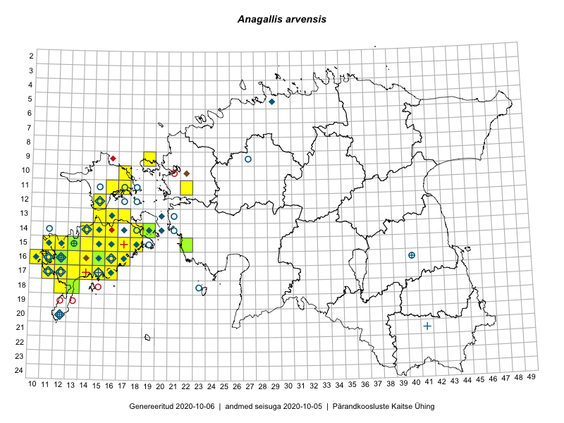

Anagallis arvensis
Uuendatud: 2016-12-02
Kaardile koondatud taksonid: Anagallis arvensis L.

Kaart põhineb 103 vaatlusel. Taksonit on leitud 34 ruudust.
Kuvatud viited 20 esimesele andmebaasikirjele, ülejäänud PlutoFis
- Toomas Kukk, Eerik Leibak: 2015-08-12: 10-17: ala
- Toomas Kukk, Eerik Leibak: 2015-08-12: 10-17: GPS punkt
- Ott Luuk: 2015-06-30: 15-12: GPS punkt
- Ott Luuk, Elle Roosaluste, Jaak-Albert Metsoja: 2015-06-15: 16-16: ala
- Ott Luuk, Elle Roosaluste, Jaak-Albert Metsoja: 2015-06-17: 16-16: GPS punkt
- Peedu Saar: 2015-09-07: 16-17: ala
- Peedu Saar: 2015-09-07: 16-17: GPS punkt
- Toomas Kukk, Thea Kull, Ott Luuk, Peedu Saar: 2014-06-27: 14-16: ala
- Mari Reitalu: 2014-07-31: 15-12: ala
- Mari Reitalu: 2015-08-25: 17-12: ala
- Mari Reitalu: 2015-07-27: 16-12: ala
- Mari Reitalu: 2015-07-27: 16-12: GPS punkt
- Mari Reitalu, Oliver Parrest: 2015-08-12: 17-13: ala
- Meeli Mesipuu: 2015-06-25: 14-19: ala
- Meeli Mesipuu: 2015-06-25: 14-19: GPS punkt
- Mari Reitalu, Oliver Parrest: 2015-07-14: 15-11: ala
- Mari Reitalu, Triin Reitalu: 2015-07-22: 17-12: ala
- Mari Reitalu, Triin Reitalu: 2015-07-31: 17-12: GPS punkt
- Mari Reitalu, Oliver Parrest: 2015-07-16: 15-11: ala
- Mari Reitalu, Triin Reitalu: 2015-08-05: 17-11: ala